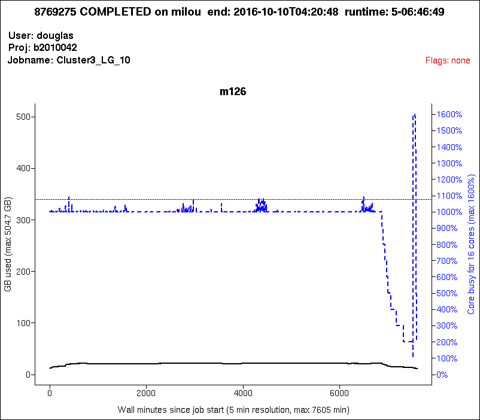
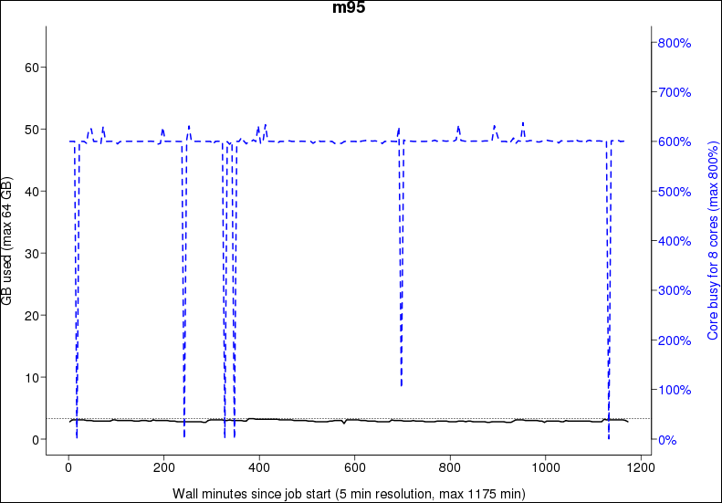
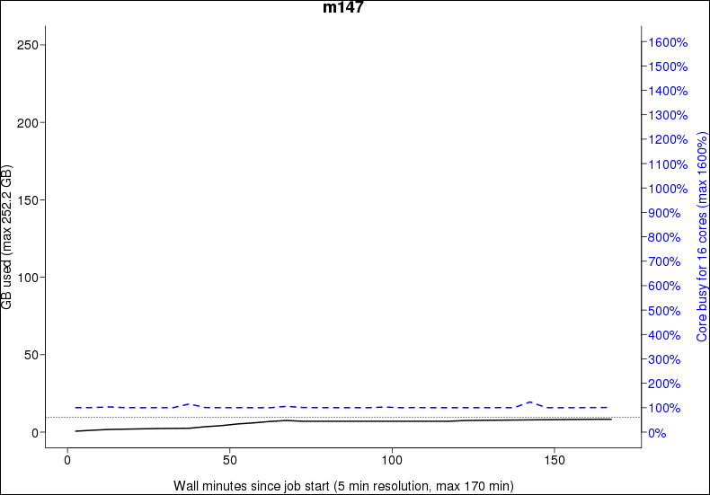

Efficiency using jobstats¶
There are multiple tools for
using your HPC resources efficiently you may need.
This page is about using your HPC resources efficiently
using the jobstats tool.
Here is the general strategy to effectively use your HPC resources:
Want to see a video?
Watch the YouTube video
obtain the CPU and memory usage of a job using jobstats
to see how to do so.
Watch the YouTube video Efficient HPC resource use, using Slurm and jobstats to see how the reasoning of this strategy works out.
flowchart TD
obtain_data[Obtain CPU and memory usage of a job]
lower_limit_based_on_memory(Pick the number of cores to have enough memory)
limited_by_cpu(For that amount of cores, would runtime by limited by CPU?)
lower_limit_based_on_cpu(Increase the number of cores, so that on average, the right amount of CPUs is booked)
done(Use that amount of cores)
add_one(Increase the number of cores by one for safety)
obtain_data --> lower_limit_based_on_memory
lower_limit_based_on_memory --> limited_by_cpu
limited_by_cpu --> |no| add_one
limited_by_cpu --> |yes| lower_limit_based_on_cpu
lower_limit_based_on_cpu --> done
add_one --> doneWhy not look at CPU usage?
Because CPU is more flexible.
For example, imagine a job with a short CPU spike, that can be processed by 16 CPUs. If 1 core has enough memory, use 1 core of memory: the CPU spike will be turned into a 100% CPU use (of that one core) for a longer duration.
To obtain the CPU and memory usage of a job using jobstats:
for example:
A plot is produced showing the resource use per node for a job that completed successfully and took longer than 5 minutes.
The produced plot will be produced in the local folder
with name
[cluster_name]-[project_name]-[user_name]-[jobid].png,
for example rackham-uppmax1234-sven-876543.png.
Use any image viewer, e.g. eog.
Each plot shows:
- detailed information in the title.
- CPU usage in blue
- current memory usage in solid black
- overall memory usage in dotted black (if available)
Need a worked-out example?

Pick the number of cores to have enough memory
The dotted black line hits the right-hand vertical axis at 1070%. This means that 11 cores (i.e. 1100%) would be enough for this job.
For that amount of cores, would runtime by limited by CPU?
The answer is 'no'. Having 11 cores would mean that most of the time only 10 are used. Only in the CPU spike at the end, the runtime is limited by CPU. This short time only has a minor impact on the runtime speed.
Increase the number of cores by one for safety
This means booking 12 cores is recommended.
Need another worked-out example?

Pick the number of cores to have enough memory
The dotted black line hits the right-hand vertical axis at 90%. This means that 1 core (i.e. 100%) would be enough for this job.
For that amount of cores, would runtime by limited by CPU?
The answer is 'yes'. Having 1 core would mean that around half the time there is too little CPU power. This has an effect.
Increase the number of cores, so that on average the right amount of CPUs are booked
This is around 8 cores (800%), as with that amount of cores:
- half of the time, there is 1 out of 7 cores booked, that is 6 too much
- half of the time, there is 7 out of 13 cores booked, that is 6 too little
This is not an exact algorithm and all numbers from 2 to 9 cores can be considered okay.
Sometimes, however, it is inevitable to use resources inefficiently, see the examples below
No queue is possible
If everyone followed these guidelines, there would probably not even be a queue most of the time!
Examples¶
Here are some examples of how inefficient jobs can look and what you can do to make them more efficient.
Inefficient job example 1: booking too much cores¶

Here booking 5 cores is considered okay.
Pick the number of cores to have enough memory
The dotted black line hits the right-hand vertical axis at 390%. This means that 4 cores (i.e. 400%) would be enough for this job.
For that amount of cores, would runtime by limited by CPU?
The answer is 'no'. Having 4 cores would mean that most of the time only 1 are used. Only for some CPU spikes, the runtime is limited by CPU. This short time only has a minor impact on the runtime speed.
Increase the number of cores by one for safety
This means booking 5 cores is recommended.
Inefficient job example 2: booking too much cores¶
This is one of the grayer areas: booking 2-9 cores is all considered reasonable.
Pick the number of cores to have enough memory
The dotted black line hits the right-hand vertical axis at 90%. This means that 1 core (i.e. 100%) would be enough for this job.
For that amount of cores, would runtime by limited by CPU?
The answer is 'yes'. Having 1 core would mean that around half the time there is too little CPU power. This has an effect.
Increase the number of cores, so that on average the right amount of CPUs are booked
This is around 8 cores (800%), as with that amount of cores:
- half of the time, there is 1 out of 7 cores booked, that is 6 too much
- half of the time, there is 7 out of 13 cores booked, that is 6 too little
This is not an exact algorithm and all numbers from 2 to 9 cores can be considered okay.
Inefficient job example 3¶

Here booking 6 cores is considered okay.
Pick the number of cores to have enough memory
The dotted black line hits the right-hand vertical axis at 40%. This means that 1 core (i.e. 100%) would be enough for this job.
For that amount of cores, would runtime by limited by CPU?
The answer is 'yes'. Having 1 core would mean that most of the time our run is limited by CPU power. This has an impact on the runtime speed.
Increase the number of cores, so that on average the right amount of CPUs are booked
This is around 6 cores (600%), as with that amount of cores:
- most of the time, there is 6 out of 6 cores booked, that is 0 too much
- only rarely, there is a little spike up or a bigger spike down
There are no signs of anything slowing them down, as the line is very even.
This jobs should either have been booked with 6 cores, or the program running should be told to use all 8 cores.
Inefficient job example 4: slowdown¶

This job is using almost all of the cores it has booked, but there seems to be something holding them back. The uneven blue curve tells us that something is slowing down the analysis, and it's not by a constant amount.
Usually this is how it looks when the filesystem is the cause of a slowdown. Since the load of the filesystem is constantly changing, so will the speed by which a job can read data from it also change.
This job should try to copy all the files it will be working with to the nodes local harddrive before running the analysis, and by doing so not be affected by the speed of the filesystem.
Please see the guide How to use the nodes own hard drive for analysis for more information.
You basically just add 2 more commands to your script file and the problem should be solved.
Inefficient job example 5¶

This job has the same problem as the example above, but in a more extreme way.
It's not uncommon that people book whole nodes out of habit and only run single threaded programs that use almost no memory. This job is a bit special in the way that it's being run on a high memory node, as you can see on the left Y-axis, that it goes up to 256 GB RAM. A normal node on Milou only have 128GB. These high memory nodes are only bookable of you book the whole node, so you can't book just a few cores on them. That means that if you need 130GB RAM and the program is only single threaded, your only option is to book a whole high memory node. The job will look really inefficient, but it's the only way to do it on our system. The example in the plot does not fall into this category though, as it uses only ~15GB of RAM, which you could get by booking 2-3 normal cores.